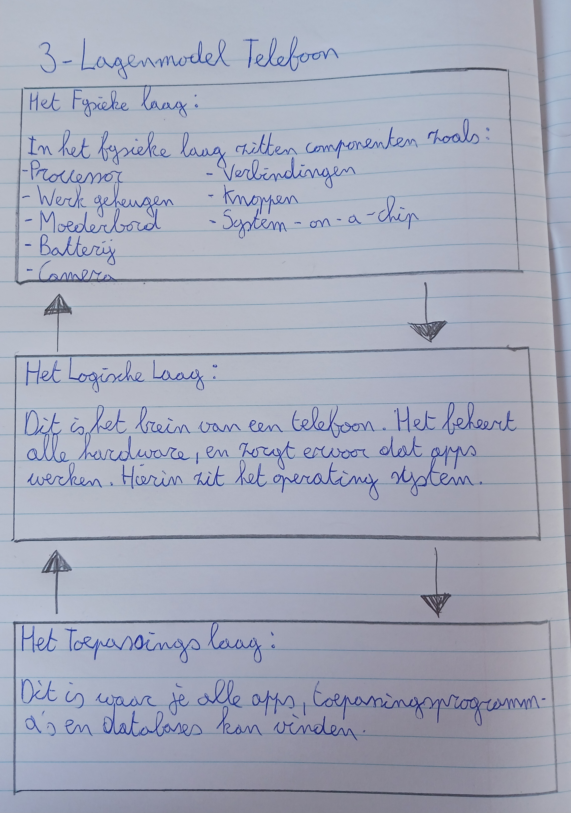

Dropdown
3-Lagenmodel
Een 3-lagenmodel is een manier om iets te organiseren of te begrijpen door het in drie delen op te splitsen.
Deze drie delen hebben elk hun eigen rol of functie. Het helpt om complexe dingen eenvoudiger te maken en te begrijpen,
omdat ze in beheersbare stukken worden verdeeld. Dit model kan in verschillende contexten worden toegepast,
zoals in de computerwereld, waar het kan verwijzen naar de manier waarop gegevens of taken zijn georganiseerd
in drie verschillende lagen. Die drie lagen zijn de fysieke-laag, de logische-laag en de toepassins-laag.
Het helpt mensen om systemen en processen beter te begrijpen. Op deze website ga ik het hebben over het 3-lagenmodel
van een mobiele telefoon.
